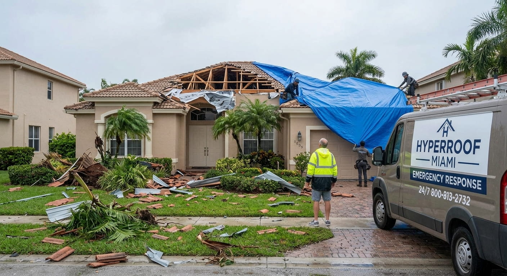

Roof Insurance Claims in Miami: What Homeowners Should Know
Roof damage after a storm creates two separate questions: what happened to the roof, and what does the homeowner's insurance policy cover? Keeping those questions separate helps prevent confusion. A contractor can evaluate physical damage, but the insurer determines coverage under the policy.
Florida's Department of Financial Services explains that policies vary and homeowners should review their own coverage. That makes documentation, timely communication and a clear record of the damage especially important.
Start with safety and documentation
Do not climb onto a damaged roof simply to get better photographs. From a safe location, document visible damage, fallen materials, interior stains and water intrusion. If conditions are unsafe, wait for professional help.
Florida's Department of Financial Services advises homeowners to take photographs before temporary repairs when possible and to keep receipts and records associated with emergency work. Review the official homeowners insurance guidance.
Report the damage to your insurer
If you believe a covered loss may have occurred, contact your insurance company or agent and follow the reporting instructions in your policy. Do not assume that a contractor can determine whether a claim will be covered. Coverage depends on the policy language, cause of loss, deductibles, exclusions and other factors.
The state's consumer guidance also recommends prompt reporting and explains that homeowners have a responsibility to take reasonable steps to prevent further damage. See Florida's storm protection guidance.
What should you document?
Build a simple file containing the date of the storm or event, photographs and videos, descriptions of visible damage, temporary repair receipts, contractor reports and communications with the insurer. Keep copies rather than relying on one phone or email account.
If damaged items need to be discarded because they are unsafe, photograph or record them first when practical. The goal is to preserve evidence without putting anyone at risk.
Why a roof inspection can help
A roofing inspection does not decide insurance coverage, but it can help document the physical condition of the roof. A written assessment can identify damaged areas, distinguish visible damage from unrelated wear, and help a homeowner understand whether the recommended work is a localized repair or a broader replacement.
Read our Miami roof inspection guide before the inspection so you know what questions to ask. If the damage is clearly storm-related, our storm damage roof repair guide provides additional practical information.
Repair versus replacement after a storm
Storm damage does not automatically mean the entire roof must be replaced. A roof can have isolated damage that is reasonably repairable. In other cases, damage may be widespread or may expose problems with the underlying system.
Ask the roofing professional to show where the damage is and explain why the recommended scope is appropriate. If replacement is proposed, ask whether the recommendation is based on widespread damage, age and condition, structural or underlayment concerns, or another specific finding.
Our guide to signs you may need a new roof can help you understand the broader decision.
Understand deductibles and policy terms
Do not judge a claim by looking only at the contractor's estimate. Your policy may have a deductible, including a separate hurricane or wind deductible depending on the policy. The Florida Department of Financial Services explains that actual cash value and replacement cost are different concepts and that policy terms vary.
Read the declarations page and policy documents, and ask your insurer or licensed insurance professional to explain anything you do not understand. The roofing contractor should not be presented as the person who determines policy coverage.
Be careful with pressure after major storms
After a major storm, homeowners may receive many offers for immediate roof work. Speed can matter when a roof is open to additional water damage, but pressure should not replace due diligence.
Ask for identification, a written scope and a clear explanation of the proposed work. Florida's consumer guidance also recommends checking contractor credentials and references rather than assuming that someone who arrives after a storm has been sent by your insurer.
Miami-Dade requirements still matter
If repair or replacement work is needed, insurance does not remove the need to follow applicable building and permitting requirements. Miami-Dade County publishes current roofing permit information. You can also review the county's Miami-Dade roofing requirements guide for a homeowner-friendly overview.
Common mistakes homeowners can avoid
Do not wait months to document obvious damage, do not destroy damaged evidence unnecessarily, and do not sign documents you do not understand. Do not assume that an estimate equals an insurance settlement, and do not allow a contractor's recommendation to substitute for reading your policy.
A clean paper trail makes the process easier for everyone involved. It also gives you better information when deciding which repairs are actually necessary.
Frequently asked questions
Does homeowners insurance always cover roof damage?
No. Coverage depends on the policy, cause of loss, exclusions, deductibles and other terms. Review your policy and speak with your insurer.
Should I repair my roof before the insurance adjuster arrives?
Reasonable temporary measures may be necessary to prevent further damage, but document the condition first when possible and keep receipts. Follow your insurer's instructions.
Can a roofer tell me whether my claim will be approved?
A roofer can describe physical damage and recommended work, but the insurer determines coverage under the policy.
Sources and further reading
- Florida Department of Financial Services — Homeowners Insurance Overview
- Florida Office of the Insurance Consumer Advocate — Protect
- Florida Department of Financial Services — Disaster FAQs
Related Miami roofing guides
Hurricane roof damage · Roof replacement cost · Roof inspection · More roofing advice